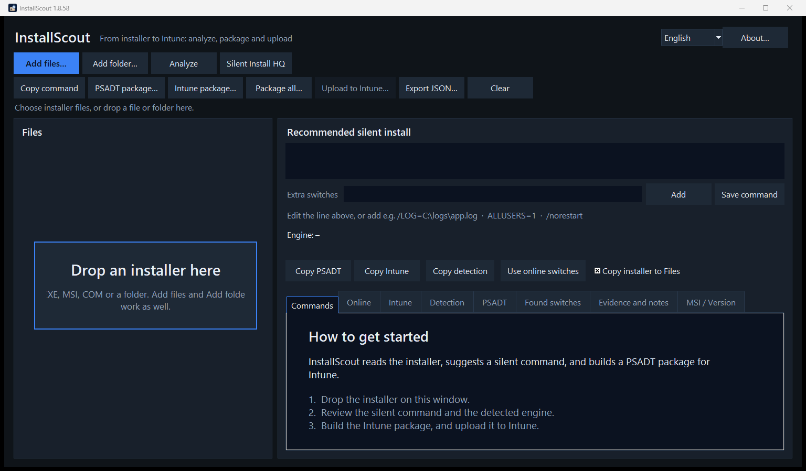
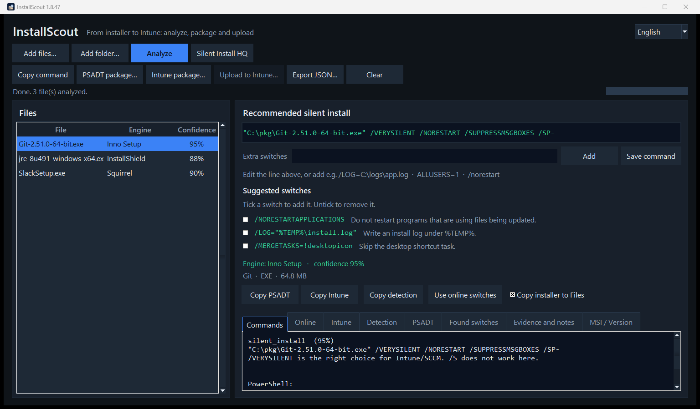
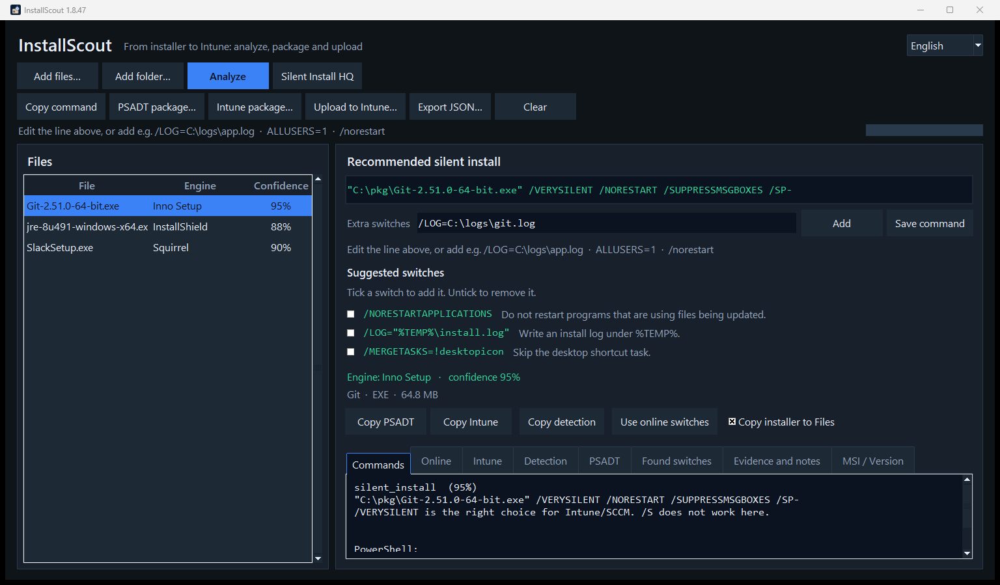
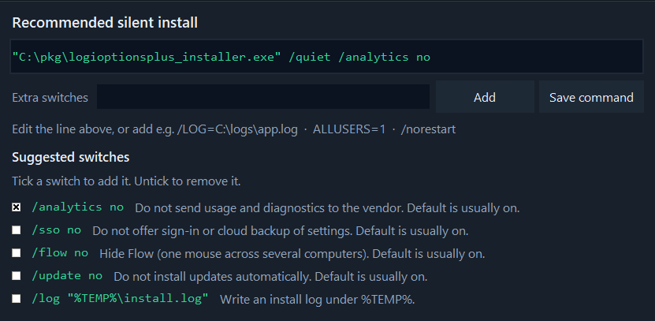
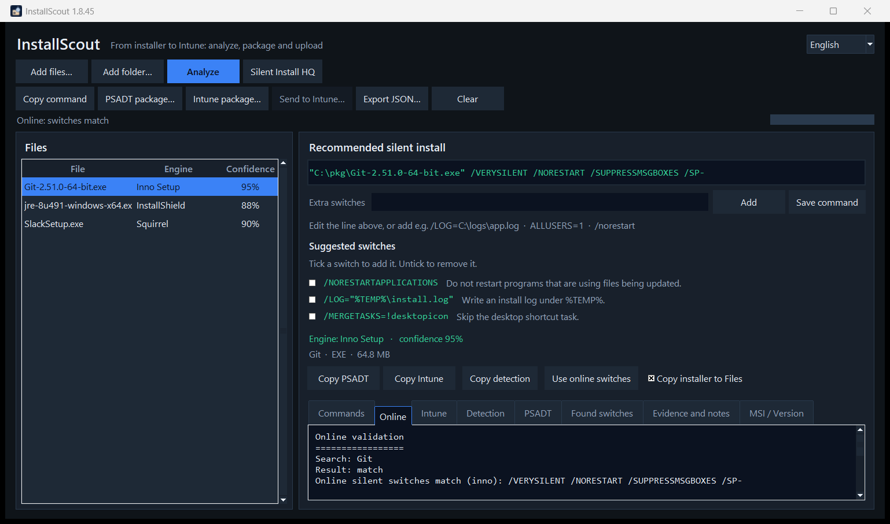
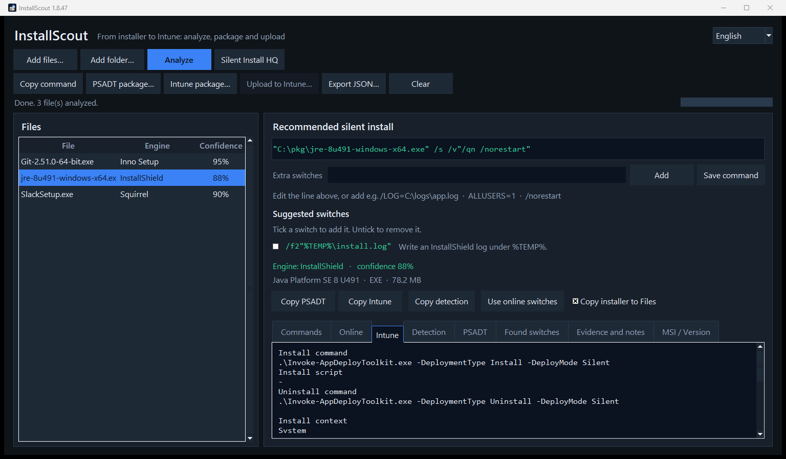
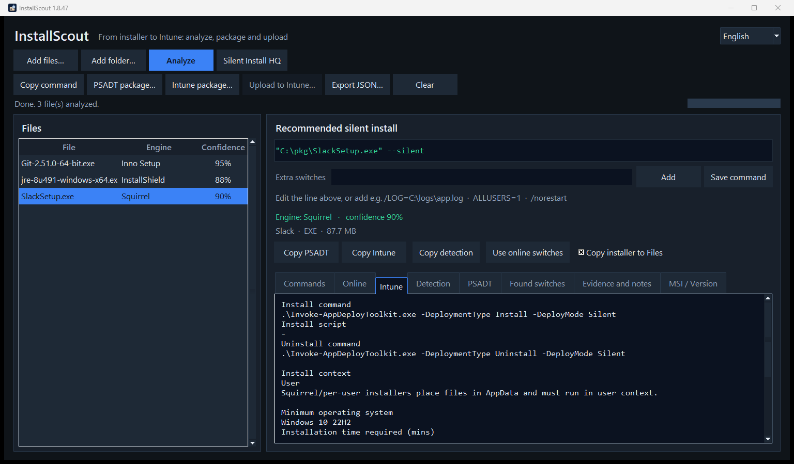
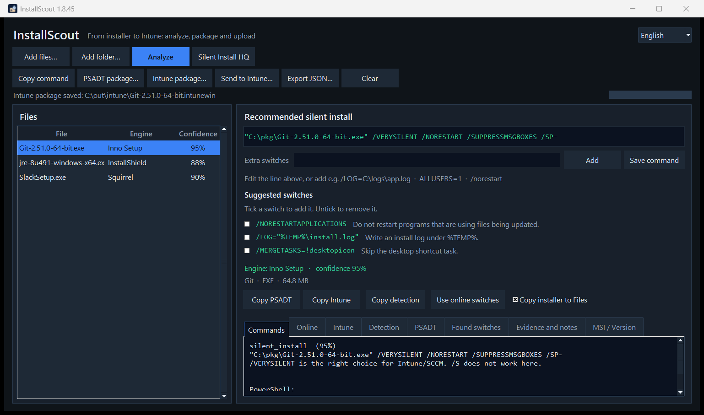
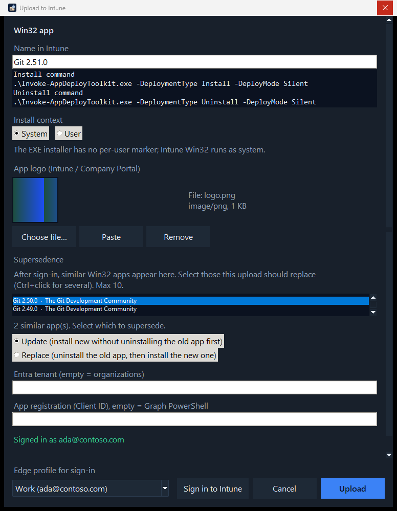
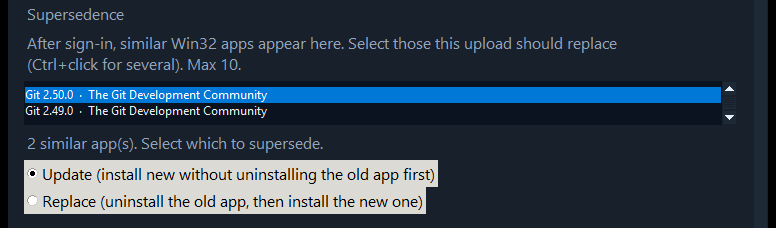

InstallScout – user guide
InstallScout takes a Windows installer all the way to Intune. You give it an EXE, MSI, COM or MSIX. It does not run the installer — it analyzes the file, lets you edit the silent command, builds a local .intunewin and uploads the Win32 app with install, uninstall, detection and app logo.
Silent switches are one step. The destination is the package in Intune.
Version 1.8.55. Quick start: quickstart-en.html. Technical reference: reference-en.html. Word edition: InstallScout-guide.docx. Danish: vejledning.html.
| File | Engine | Typical result |
|---|---|---|
Git-2.51.0-64-bit.exe | Inno Setup | Local and online agree on /VERYSILENT … · System · not unpacked |
jre-8u491-windows-x64.exe | InstallShield | Local /s /v"/qn" · online Java 8 /S · System |
AcroRdrDC….exe | Self Extractor | Outer /sAll /rs /rps /msi /quiet · online Acrobat Reader · System |
SlackSetup.exe | Squirrel | Per-user · User |
1. Start and window
Double-click InstallScoutPortable.exe or run Start.bat. No installation is required. The UI defaults to English; switch to Dansk in the top-right corner. About… next to the language field shows the version, developer, and links to GitHub.
The download is not code-signed. Windows or company security may warn or block it. Choose Keep / Run anyway, ask IT to allow the file, or try it in a VM or Windows Sandbox without those policies.

Drop an installer on the window, or use Add files / Add folder. The empty start shows Drop an installer here in the file list and a short introduction on the Commands tab. EXE, MSI, COM and a whole folder can be dropped.
The buttons sit on two rows. Top: add and Analyze. Below: copy, package and Upload to Intune. The language is changed at the top right. The default is English.
Left: files, engine and confidence (how sure the analysis is).
Right: recommended silent command (editable), the Extra switches field, plus the tabs Commands, Online, Intune, Detection, PSADT, Found switches, Evidence and notes, and MSI / Version.
Status and progress sit on their own row under the buttons, so they stay visible when the window is not maximized.
| Button | Action |
|---|---|
| Add files… / Add folder… | Choose EXE, MSI, COM, MSIX |
| Analyze | Read the file locally |
| Analyze | Read the file locally, then look up WinGet and Chocolatey (name/vendor only) |
| Silent Install HQ | Opens a name search in the browser — file is not uploaded, command is not overwritten |
| Copy command | Silent line to the clipboard |
| PSADT package… | Folder with PSADT 4.1.8 |
| Intune package… | Local .intunewin + detection — required before upload |
| Upload to Intune… | Sign in and create the Win32 app (logo, context, detection, supersedence) |
| Add / Save command | Extra switches, or save the edited line |
| Use online switches | Overwrite the local command with the catalog |
2. Workflow
- Add installer → Analyze
- Analyze → Silent command
- Silent command → Intune package
- Analyze → WinGet and Chocolatey
- WinGet and Chocolatey → Intune package
- Analyze → System or User
- System or User → Intune package
- Intune package → Test in a VM
- Test in a VM → Upload to Intune
The process ends with upload. The silent command is a middle step.
- Add the file and click Analyze.
- Read the green silent command. Edit it, or add extra switches, then click Save command / Add.
- Read the Online tab when it fills in. A confident local engine is kept if the catalog disagrees. A weak local guess is replaced when WinGet or Chocolatey has a matching product. On none, use Silent Install HQ (name search only).
- Open Intune and check Install context (System/User).
- Build an Intune package (local
.intunewin). Test withInvoke-AppDeployToolkit.exe. - Upload to Intune — the dialog opens tall enough to show the name, command, logo, supersedence and sign-in. One Edge profile is shown; open the field to pick another. Sign in to Intune, Cancel and Upload share that row.
3. Local switch check
Local analysis looks inside the binary — markers, PE sections, VersionInfo, MSI properties and text switches in the file. It picks an engine (Inno, NSIS, InstallShield, MSI, Self Extractor, …) and builds the command from that engine’s known silent flags.
Inner setup (unpack) happens locally and without running the installer. The goal is the silent line (and the file copied into Files\) from the payload that actually installs the product.
| Situation | What InstallScout does |
|---|---|
| Wrapper: 7-Zip SFX, WinRAR SFX, IExpress, WiX Burn, InstallShield, Advanced Installer, Self Extractor | Looks for ZIP, embedded MSI, CAB, and 7z (bundled 7za) |
| Unknown engine or very low confidence | Same cheap unpack (ZIP / MSI / CAB / 7z) |
| Clean engines: Inno, NSIS, Squirrel, DDPM, Wacom, Chrome, Python, … | Does not unpack — the outer EXE already has the right dialect |
Self Extractor with outer silent flags (/sAll, --silent, /silent) | Keeps the outer command (typical Adobe-style /sAll /rs /rps /msi /quiet) |
| Self Extractor without those flags | Adopts the inner setup when it is found (often an MSI) |
The installer is never executed to unpack. Large vendor SFX files are therefore not extracted just to confirm a /sAll that is already in the file.
What to look at
- Engine + confidence — 75 %+ is typically usable. Below ~40 %, read the Evidence tab.
- Recommended silent install — the command PSADT and Intune use.
- Found switches — raw flags that actually appear in the file.
- Evidence and notes — why the engine was chosen, and pitfalls (e.g.
/Sdoes not work on Inno).
Example: Git (Inno Setup)

Local conclusion:
Engine: Inno Setup · confidence 95 %
"C:\pkg\Git-2.51.0-64-bit.exe" /VERYSILENT /NORESTART /SUPPRESSMSGBOXES /SP-Inno does not use /S. That is in the notes. The Commands tab also shows the PowerShell form.
Example: Java 8 (InstallShield + embedded MSI)
Java Platform SE 8 is detected as InstallShield. The silent line becomes:
jre-8u491-windows-x64.exe /s /v"/qn"/s is InstallShield; /v"/qn" is passed to the embedded MSI. That is the local, file-based truth — even if WinGet names the product differently.
In the PSADT package, an InstallShield line that contains quotes is started through cmd /d /s /c, so /v"/qn" is preserved. The package elevates itself when it is not already running as administrator. Intune as SYSTEM is already administrator and skips that.
Example: vendor Self Extractor (Adobe and others)
FileDescription / ProductName Self Extractor is a vendor wrapper class, not a product. Adobe, Lenovo and others use the same label.
- If
/sAllor/rpsis in the file, the recommended line is"file.exe" /sAll /rs /rps /msi /quiet. - If
--silentor/silentis in the file, that dialect is used instead. - If no outer silent flag is found, the inner MSI/EXE is unpacked and those switches are used.
- The UI may still show Adobe Self Extractor as the engine name (from VersionInfo). The product used for Intune and online search is the real name or the file stem (
AcroRdrDC), not the wrapper label.
Other typical local defaults
| Engine | Silent |
|---|---|
| MSI / WiX | msiexec /i file.msi /qn |
| NSIS | /S (capital S) |
| Advanced Installer | /exenoui /qn |
| WiX Burn | /quiet |
| 7-Zip SFX / Wacom | /s |
| Self Extractor | /sAll … (uninstall /uninst) or harvested --silent / /silent |
| DDPM | /Silent (not InstallShield /s /v"/qn") |
/install is not added. It is already the default action for WiX Burn. /norestart is not added either. Inno Setup still uses its own /NORESTART. Type /norestart under Extra switches when a quiet install must not reboot the PC.
Manual switches
The green line is editable. Under it are Extra switches, Add and Save command.

- Edit the whole command and click Save command (or press Enter in the line).
- Put only the extra flags in Extra switches, e.g.
/LOG=C:\logs\app.logorALLUSERS=1, then click Add. The installer path is left alone. - Suggested switches appear under that, when the file or its engine has optional flags. Each line has a short description. Tick it to add the switch to the command, and untick to remove it. Logi Options+
/analytics noand/sso noare examples of flags read from the installer; Inno/LOGand MSIALLUSERS=1are examples that follow the engine.

- Changes are also saved when you package, copy or check online.
- If the command changes, build the Intune package again before upload (Upload to Intune otherwise stays grey, because the old
.intunewinis invalid).
4. Online switch check
Analyze looks the product up in WinGet and Chocolatey after the local result is shown:
- WinGet (winget.run +
winget.exeon the machine) - Chocolatey Community
Silent Install HQ opens a browser search for the product name on silentinstallhq.com. The installer file is not uploaded, and the silent command is not overwritten. Use it when WinGet/Chocolatey conflict or return nothing — vendor-specific CLIs often live there.
Only the product name and vendor are sent — not the installer file.
Search uses both the long product name and catalog names. Wrapper labels are stripped so WinGet is not queried for Adobe Self Extractor. Compact file names are expanded to names the catalogs actually index:
| In the file | Online search |
|---|---|
| Java Platform SE 8 U491 | Java 8 (Oracle.JavaRuntimeEnvironment) |
Adobe Self Extractor + AcroRdrDC….exe | Acrobat Reader |
GoogleChromeStandaloneEnterprise64.exe | Google Chrome |
npp.8.6.Installer.x64.exe | Notepad++ |
The Online tab shows a result:
| Result | Meaning |
|---|---|
| match | Same installer family (Inno, MSI, NSIS, …) |
| partial | Some flags overlap |
| conflict | Different family — read the sources, test in a VM |
| none | No hits (e.g. an internal/unnamed package) |
| error | Network or source failure |
Example: Git — local and online agree

Search: Git
Result: match
Online silent switches match (inno): /VERYSILENT /NORESTART /SUPPRESSMSGBOXES /SP-
Local switches: /VERYSILENT /NORESTART /SUPPRESSMSGBOXES /SP-
winget.exe: Git.Git
Chocolatey: gitHere you can keep the local command.
Example: Java — the catalog is coarser than the file
Online finds Java 8 with /S. Locally it is InstallShield /s /v"/qn". Both may be “quiet enough”, but the local line is more precise for this Oracle wrapper.
- Keep local switches when they match the engine in the file.
- Use Use online switches if the local engine is uncertain and the catalog is clear (as with Git/Inno).
- Build the Intune package again if you overwrite the command.
Catalogs can be wrong (wrong edition, OpenJDK instead of Oracle). Always test in a VM.
5. User vs system context
Intune Win32 must run as system or user. The wrong choice shows “installed” for the wrong account, missing Program Files files, or detection that never matches.
InstallScout infers context automatically and shows it on the Intune tab, in Intune.txt and in the Upload to Intune dialog. You can override it at upload.
- Analysis → Squirrel?
- Squirrel? — yes → User
- Analysis → Note: per-user?
- Note: per-user? — yes → User
- Analysis → ALLUSERS=0 or AppData in args?
- ALLUSERS=0 or AppData in args? — yes → User
- Analysis → ALLUSERS=1?
- ALLUSERS=1? — yes → System
- Analysis → MSI / InstallShield / Advanced Installer / WiX / Wacom / MSIX?
- MSI / InstallShield / Advanced Installer / WiX / Wacom / MSIX? — yes → System
- Analysis → Inno, NSIS, 7-Zip SFX with no per-user marker
- Inno, NSIS, 7-Zip SFX with no per-user marker → System
An installer path under %LOCALAPPDATA%\Temp does not count as user context — only the arguments after the file path.
Default: System (machine install)
Most business Win32 packages should run as system: MSI with ALLUSERS=1, InstallShield, Advanced Installer, Inno/NSIS without a per-user flag.

Install context
System
InstallShield is typically a machine install and requires system context.
Minimum operating system Windows 10 22H2
Installation time required 60
Device restart behavior No specific actionThe same default fields are used when uploading to Intune.
Exception: User (per-user)
Squirrel (Slack, many Electron apps), InstallAllUsers=0 / ALLUSERS=0, or an install that explicitly targets AppData.

Install context
User
Squirrel/per-user installers place files in AppData and must run in user context.In Upload to Intune, System/User is preselected, but you can change it if you know the package better than the guess.
Why it matters
| Context | Typical target | Detection |
|---|---|---|
| System | C:\Program Files, HKLM Uninstall | Machine ARP / MSI ProductCode |
| User | %LOCALAPPDATA%, HKCU Uninstall | The user’s Uninstall key — fails if the app runs as system |
6. Upload to Intune
Upload is a two-step run: first a local .intunewin, then Upload to Intune. The program uploads the package you already saved — it does not repackage on upload.
Analyze → Intune package… (local .intunewin) → Upload to Intune… (Graph upload)What lands in Intune is a Win32 app with:
- install and uninstall command (
Invoke-AppDeployToolkit.exe … Silent) - custom detection script (
Detection.ps1, 64-bit PowerShell). See Detection below. - Install context (System or User — prefilled, can be overridden)
- App logo (
largeIconin Company Portal — from the EXE, a file, or the clipboard) - Minimum OS Windows 10 22H2, 60 minutes, restart No specific action
Step 1 — local Intune package
Intune package… saves:
| File | Contents |
|---|---|
*.intunewin | Encrypted Win32 payload (same format as Microsoft Win32 Content Prep) |
| PSADT source | Invoke-AppDeployToolkit.exe + script + Files\ |
Intune.txt | Fields for the portal |
Detection.ps1 | Custom detection |
Detection
Intune treats the app as installed when Detection.ps1 exits 0 and writes a line to STDOUT. Empty output means not installed. The script does not throw. The same rules apply to every vendor.
| What the installer has | What is matched |
|---|---|
| Product code (MSI, or a GUID in the uninstall command) | That code in the uninstall registry, and the version |
| EXE without a product code | Display name, publisher and version |
| MSIX | Package name, and the version when it is known |
- Name. The uninstall name may be the product without a trailing Installer, Setup, Bootstrapper, or Driver word.
Logi Options+ InstallermatchesLogi Options+.Wacom Tablet DrivermatchesWacom Tablet. The registry key name counts as well. A leftover generic word such as Advanced is not used as the name. - Publisher. Legal suffixes are ignored, so
Logitech, Inc.matchesLogitech, andMicrosoft CorporationmatchesMicrosoft. - Version. When the installer has a version,
DisplayVersionmust be the same or newer. The comparison is numeric. For an installer at2.7.961922, that version and2.8.1count;2.6does not.2.8.1is only an example of the comparison. A hyphen revision such as6.4.14-1is also satisfied by6.4.14. If no version was read, version is not required. A key named as the product still counts when those values were never written. - Product code is tried first. When it is missing, name, publisher and version are used. Both the machine and the user uninstall keys are read.
Until a package exists for the selected file, Upload to Intune is grey. After the package is saved, the button becomes active:

Test the source before upload:
.\Invoke-AppDeployToolkit.exe -DeploymentType Install -DeployMode SilentStep 2 — Upload to Intune
Click Upload to Intune…. The dialog sizes itself so the content is visible without scrolling. One Edge profile is shown at the bottom. Open the field to pick another. Sign in to Intune, Cancel and Upload share that row.

Logo
- InstallScout first tries to extract the icon from the EXE (and looks for
logo.png/icon.iconext to the file). - Choose file… — PNG, JPEG, ICO, GIF or BMP.
- Paste (Ctrl+V) — image or file from the clipboard.
- Remove — upload without a logo.
- MSI often only has the Windows default icon; use a file or paste.
In the dialog
- Edit Name in Intune if the detected name should not be the name in Company Portal. Version stays in Display version.
- Check the install, uninstall and detection summary.
- Confirm Install context (System/User). Change it only if you know the package better.
- Check the app logo (preview). Override with a file or paste if the automatic icon is wrong.
- Tenant and Client ID can stay empty: then organizations and Microsoft Graph PowerShell are used. InstallScout does not create an Entra app.
- Edge profile for sign-in shows the selected profile. The work profile is selected when it can be recognized. Open the list to pick another.
- Sign in to Intune — browser login (PKCE, localhost) in the selected Edge profile. Device code is not used, because Conditional Access often blocks it.
- After sign-in: optionally choose supersedence (see below). Nothing is selected automatically.
- Upload — creates the app, uploads
.intunewin, sets detection, logo and optional supersedence. The status line shows progress.
Supersedence
In Upload to Intune the new Win32 app can replace older versions in the tenant — the same feature as Supersedence in the Intune portal.
Wait until the status is Signed in as …, not only that the Edge profile opened. Only then does InstallScout look up Win32 apps. The search uses the product name (startswith on displayName), not the entire Win32 catalogue. The list shows apps whose names look like the product — e.g. Git 2.50.0 when you send Git 2.51.0. The same vendor with a different product is typically omitted.

- Nothing is selected automatically. Ctrl+click to select (at most 10 — Intune’s limit).
- Update (default) — install the new app without uninstalling the old one first.
- Replace — uninstall the old app, then install the new one.
- Relationships are written only after the new app is created (Graph
updateRelationships). - If supersedence fails, the new app still remains. The dialog shows which apps were superseded, or the error. You can set the relationship in the portal afterwards.
.\InstallScoutPortable.exe --cli .\setup.exe --intune C:\out\intune --publish-intune --supersede update
.\InstallScoutPortable.exe --cli .\setup.exe --intune C:\out\intune --publish-intune --supersede replace --supersede-id <app-guid>--supersede update|replace matches on product name as in the GUI. Repeat --supersede-id if you already know the Intune app ID.
After success, a link to the app in the Intune portal opens.
What Graph writes on the app
| Field | Value |
|---|---|
| App type | Win32 (win32LobApp) |
| Install command | .\Invoke-AppDeployToolkit.exe -DeploymentType Install -DeployMode Silent |
| Uninstall command | .\Invoke-AppDeployToolkit.exe -DeploymentType Uninstall -DeployMode Silent |
| Detection | PowerShell script, not 32-bit, no signature requirement |
| runAsAccount | system or user |
| Minimum OS | Windows 10 22H2 |
| Max runtime | 60 minutes |
| Restart | No specific action (suppress) |
| Logo | largeIcon (PNG/JPEG from EXE, file or clipboard) |
| Supersedence | Optional: Update or Replace against up to 10 older Win32 apps |
PSADT package without Intune
PSADT package… is the same source without .intunewin — useful for VM testing before you package for Intune.
Command-line upload
.\InstallScoutPortable.exe --cli .\setup.exe --intune C:\out\intune --publish-intune --icon .\logo.png--publish-intune requires --intune (local package first), same as in the GUI. Without --icon, the logo is taken from the EXE if one is found.
Sign-in and permissions
Sign-in opens in the browser with PKCE. Device code is not used.
Windows DPAPI encrypts the access token and the refresh token for the current Windows user, in %LOCALAPPDATA%\InstallScout\graph.json. The saved session is bound to the selected tenant and Client ID. A different pair does not reuse it. A plaintext token file from an older version is deleted and cannot be used. Sign-out deletes the file.
- Windows 10 or 11. Switch lookup and a local package do not need Azure.
- Microsoft Edge. Sign-in opens in an Edge profile.
- An account that can create Win32 apps: the Entra role Intune Administrator, or the Intune role Application Manager. A custom role with the same app permissions works too.
- Admin consent in the tenant for
DeviceManagementApps.ReadWrite.All. - Default Client ID: Microsoft Graph PowerShell (
14d82eec-204b-4c2f-b7e8-296a70dab67e). InstallScout does not create an app registration. - Conditional Access can still block. IT can create a public client with redirect
http://localhostand set the Client ID in the dialog.
7. Command line
InstallScoutPortable.exe with no arguments opens the GUI. For scripts:
# Local analysis
.\InstallScoutPortable.exe --cli "C:\installers\Git-64-bit.exe"
# Local + online
.\InstallScoutPortable.exe --cli "C:\installers\jre-8u491-windows-x64.exe" --online
# Silent Install HQ (name search in the browser; does not upload the file)
.\InstallScoutPortable.exe --cli "C:\installers\DDPM-Setup.exe" --sihq
# JSON
.\InstallScoutPortable.exe --cli .\setup.exe --json --out .\analyse.json
# Extra switches
.\InstallScoutPortable.exe --cli .\setup.exe --switches "/LOG=C:\logs\app.log"
# Local Intune package
.\InstallScoutPortable.exe --cli .\setup.exe --intune C:\out\intune
# Package + upload + logo (requires --intune)
.\InstallScoutPortable.exe --cli .\setup.exe --intune C:\out\intune --publish-intune --icon .\logo.png
# Upload and supersede matching Win32 apps
.\InstallScoutPortable.exe --cli .\setup.exe --intune C:\out\intune --publish-intune --supersede updateFrom source: python -m installscout with the same flags. Use --lang da for Danish CLI text.
8. Supported engines
MSI, Inno Setup, NSIS, InstallShield, WiX Burn, Advanced Installer, InstallAware, BitRock, Squirrel, Wise, install4j, Qt Installer, 7-Zip SFX, Wacom, WinRAR SFX, IExpress, Self Extractor, DDPM, MSIX/AppX, ClickOnce.
Unknown engine: look at Found switches and Evidence. Analyze also asks WinGet and Chocolatey and uses that hit when the local guess is weak. Wrappers and unknown EXEs are unpacked locally first so an inner MSI can replace Unknown 15 %.
9. Limits
- About… checks GitHub for a newer release. The button shows About · Update when one is available.
- The download is not code-signed. Windows or company security may warn or block it. Choose Keep / Run anyway, ask IT to allow the file, or try it in a VM or Windows Sandbox without those policies.
- The program does not install anything. Unpack never runs the installer. Test the silent line in a VM.
- A bundled 7-Zip Extra
7zais used for inner 7z payloads, so system 7-Zip is not required. - Online catalogs often know a different name or a newer build than your file. Wrapper VersionInfo (Self Extractor) is not a catalog product.
- Context is a qualified guess. Override it in Upload to Intune if you know better.
- Intune upload needs Graph permission and can hit Conditional Access.
- Installer binaries are not sent over the network during the online check.
- Upload to Intune is inactive until a local
.intunewinexists for the selected file. - MSI often has no usable icon. Use Choose file… or Paste.
- Manual switches overwrite the recommended line in PSADT; test in a VM.
- The supersedence list appears only after sign-in has finished (Signed in as …).
- If supersedence fails, the new Win32 app still remains in Intune.